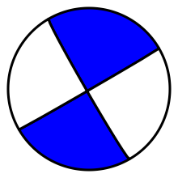
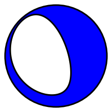
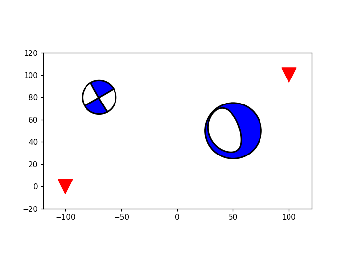

obspy.imaging - Plotting Routines for ObsPy¶
This module provides routines for plotting and displaying often used in
seismology. It can currently plot waveform data, generate spectrograms and draw
beachballs. The module obspy.imaging depends on the plotting module
matplotlib.
| copyright: | The ObsPy Development Team (devs@obspy.org) |
|---|---|
| license: | GNU Lesser General Public License, Version 3 (https://www.gnu.org/copyleft/lesser.html) |
Seismograms¶
This submodule can plot multiple Trace in one
Stream object and has various other optional
arguments to adjust the plot, such as color and tick format changes.
Additionally the start and end time of the plot can be given as
UTCDateTime objects.
Examples files may be retrieved via https://examples.obspy.org.
>>> from obspy import read
>>> st = read()
>>> print(st)
3 Trace(s) in Stream:
BW.RJOB..EHZ | 2009-08-24T00:20:03.000000Z - ... | 100.0 Hz, 3000 samples
BW.RJOB..EHN | 2009-08-24T00:20:03.000000Z - ... | 100.0 Hz, 3000 samples
BW.RJOB..EHE | 2009-08-24T00:20:03.000000Z - ... | 100.0 Hz, 3000 samples
>>> st.plot(color='gray', tick_format='%I:%M %p',
... starttime=st[0].stats.starttime,
... endtime=st[0].stats.starttime+20)
(Source code, png, hires.png)
{kind=link}
{kind=link}
Spectrograms¶
The obspy.imaging.spectrogram submodule plots spectrograms.
The spectrogram will on default have 90% overlap and a maximum sliding window
size of 4096 points. For more info see
obspy.imaging.spectrogram.spectrogram().
>>> from obspy import read
>>> st = read()
>>> st[0].spectrogram(log=True)
(Source code, png, hires.png)
{kind=link}
{kind=link}
Beachballs¶
Draws a beach ball diagram of an earthquake focal mechanism.
Note
ObsPy ships with two engines for beachball generation.
obspy.imaging.beachballis based on the program from the Generic Mapping Tools (GMT) and the MATLAB script bb.m written by Andy Michael and Oliver Boyd, which both have known limitations.obspy.imaging.mopad_wrapperis based on the the Moment tensor Plotting and Decomposition tool (MoPaD) [Krieger2012]. MoPaD is more correct, however it consumes much more processing time.
The function calls for creating beachballs are similar in both modules. The following examples are based on the first module, however those example will also work with MoPaD by using
>>> from obspy.imaging.mopad_wrapper import beachball
and
>>> from obspy.imaging.mopad_wrapper import beach
respectively.
Examples
The focal mechanism can be given by 3 (strike, dip, and rake) components. The strike is of the first plane, clockwise relative to north. The dip is of the first plane, defined clockwise and perpendicular to strike, relative to horizontal such that 0 is horizontal and 90 is vertical. The rake is of the first focal plane solution. 90 moves the hanging wall up-dip (thrust), 0 moves it in the strike direction (left-lateral), -90 moves it down-dip (normal), and 180 moves it opposite to strike (right-lateral).
>>> from obspy.imaging.beachball import beachball >>> np1 = [150, 87, 1] >>> beachball(np1) <matplotlib.figure.Figure object at 0x...>
(Source code, png, hires.png)
The focal mechanism can also be specified using the 6 independent components of the moment tensor (M11, M22, M33, M12, M13, M23). For
obspy.imaging.beachball.beachball()(1, 2, 3) corresponds to (Up, South, East) which is equivalent to (r, theta, phi). Forobspy.imaging.mopad_wrapper.beachball()the coordinate system can be chosen and includes the choices ‘NED’ (North, East, Down), ‘USE’ (Up, South, East), ‘NWU’ (North, West, Up) or ‘XYZ’.>>> from obspy.imaging.beachball import beachball >>> mt = [-2.39, 1.04, 1.35, 0.57, -2.94, -0.94] >>> beachball(mt) <matplotlib.figure.Figure object at 0x...>
(Source code, png, hires.png)
For more info see
obspy.imaging.beachball.beachball()andobspy.imaging.mopad_wrapper.beachball().Plot the beach ball as matplotlib collection into an existing plot.
>>> import matplotlib.pyplot as plt >>> from obspy.imaging.beachball import beach >>> >>> np1 = [150, 87, 1] >>> mt = [-2.39, 1.04, 1.35, 0.57, -2.94, -0.94] >>> beach1 = beach(np1, xy=(-70, 80), width=30) >>> beach2 = beach(mt, xy=(50, 50), width=50) >>> >>> plt.plot([-100, 100], [0, 100], "rv", ms=20) [<matplotlib.lines.Line2D object at 0x...>] >>> ax = plt.gca() >>> ax.add_collection(beach1) >>> ax.add_collection(beach2) >>> ax.set_aspect("equal") >>> ax.set_xlim((-120, 120)) (-120, 120) >>> ax.set_ylim((-20, 120)) (-20, 120)
(Source code, png, hires.png)
For more info see
obspy.imaging.beachball.beach()andobspy.imaging.mopad_wrapper.beach().
{kind=link}
{kind=link}
{kind=link}
{kind=link}
{kind=link}
{kind=link}
Saving plots into files¶
All plotting routines offer an outfile argument to save the result into a
file.
The outfile parameter is also used to automatically determine the file
format. Available output formats mainly depend on your matplotlib settings.
Common formats are png, svg, pdf or ps.
>>> from obspy import read
>>> st = read()
>>> st.plot(outfile='graph.png')
Modules¶
spectrogram |
|
beachball |
|
cm |
|
waveform |
|
mopad_wrapper |
|
maps |
|
source |
Scripts¶
scripts.scan |
|
scripts.plot |
|
scripts.mopad |